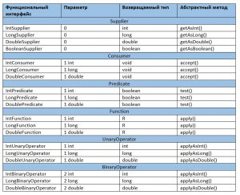
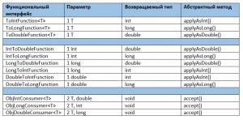

Функциональные интерфейсы в Java 8
Рубрика: Основы JavaФевраль 22, 2017
Функциональные интерфейсы в Java 8 – это интерфейсы, которые содержат в себе только один абстрактный метод. Функциональные интерфейсы имеют тесную связь с лямбда выражениями и служат как основа для применения лямбда выражений в функциональном программировании на Java. Хотелось бы напомнить один нюанс — до появления Java 8 все методы в интерфейсе неявно считались абстрактными. С выходом JDK 8 появилось такое понятие как метод по умолчанию. Метод по умолчанию – это метод объявленный в интерфейсы, поведение которого предопределено, иначе говоря, метод уже имеет реализацию в интерфейсе. Давайте рассмотрим пример функционального интерфейса:
@FunctionalInterface interface functionalInterface{ abstract public void abstractMethod(); }
|
1 2 3 4 |
interface functionalInterface{ |
functionalInterface, в нашем примере является типичным функциональным интерфейсом, который содержит в себе один абстрактный метод – abstractMethod(). Аннотация @FunctionalInterface не обязательна, но я бы рекомендовал ее использовать, хотя бы для самоконтроля:
@FunctionalInterface // ошибка компиляции interface functionalInterface{ abstract public void abstractMethod(); abstract public void abstractMethod1(); }
|
1 2 3 4 5 |
@FunctionalInterface // ошибка компиляции interface functionalInterface{ abstract public void abstractMethod(); |
При наличии аннотации компилятор нам сообщит, что наш интерфейс больше не является функциональным, так как мы добавили в него второй абстрактный метод – abstractMethod1(). Немного практики никогда не повредит:
@FunctionalInterface interface functionalInterface{ abstract public void abstractMethod(); }
|
1 2 3 4 |
interface functionalInterface{ |
как вы думаете какой из этих трех интерфейсов можно назвать функциональным?
interface Interface1 extends functionalInterface{ } interface Interface2 extends functionalInterface{ @Override abstract public void abstractMethod(); } interface Interface3 extends functionalInterface{ public default void defMethod(){}; }
Правильный ответ – все три, в этом вы можете убедиться, добавив каждому из интерфейсов аннотацию @FunctionalInterface. Первый – не содержит в себе никаких методов, но наследует абстрактный метод от родительского интерфейса. Второй – содержит в себе один абстрактный метод, который переопределяет метод родительского интерфейса. Третий – содержит в себе метод по умолчанию, который абстрактным не является, но интерфейс так же наследует абстрактный метод, который наследуется от родительского интерфейса. Помните не важно сколько у вас методов по умолчанию или статичных методов в функциональном интерфейсе, главное, чтобы у вас был только один абстрактный метод.
Реализация функционального интерфейса, ничем не отличается от реализации обычного интерфейса:
@FunctionalInterface interface functionalInterface{ abstract public void abstractMethod(); } class Test implements functionalInterface{ @Override public void abstractMethod(){ System.out.println("Функциональные интерфейсы в Java 8"); } }
|
1 2 3 4 5 6 7 8 9 10 11 |
interface functionalInterface{ abstract public void abstractMethod(); class Test implements functionalInterface{ |
Помимо обычной реализации классом, мы можем реализовать функциональные интерфейсы с помощью лямбда выражений. Для начала создадим класс:
class Car{ private String name; private boolean isFullDrive; private boolean isGasEngine; public Car(String name, boolean isFullDrive, boolean isGasEngine){ this.name = name; this.isFullDrive = isFullDrive; this.isGasEngine = isGasEngine; } public boolean isFullDrive(){ return isFullDrive; } public boolean isGasEngine(){ return isGasEngine; } @Override public String toString(){ return name; } }
|
1 2 3 4 5 6 7 8 9 10 11 12 13 14 15 16 17 18 19 20 21 22 23 24 |
public Car(String name, boolean isFullDrive, boolean isGasEngine){ this.isFullDrive = isFullDrive; |
Очередь за функциональным интерфейсом:
@FunctionalInterface interface CheckCar{ public boolean test(Car car); }
|
1 2 3 4 |
Последний штрих:
public class Example{ private static void printTest(Car car, CheckCar check){ if(check.test(car)){ System.out.println(car); } } public static void main(String[] args) { Car audiA3 = new Car("AudiA3", true, true); Car audiA6 = new Car("AudiA6", true, false); printTest(audiA3, c -> c.isFullDrive()); printTest(audiA3, c -> c.isGasEngine()); printTest(audiA6, c -> c.isFullDrive()); printTest(audiA6, c -> c.isGasEngine()); } }
Вывод:
AudiA3
AudiA3
AudiA6
Метод printTest(), соответствует ли переданная характеристика машины истине(в нашем случае это наличие полного привода и бензиновый двигатель), если да – то метод выводит ее название. Как вы могли заметить, в метод для тестирования мы передавали лямбда выражения:
с -> c.isFullDrive(); c -> c.isGasEngine();
|
1 2 |
Первое выражение означает, вызов метода с параметром Car, который возвращает логическое выражение, которое в свою очередь является результатом вызова c.isFullDrive(). При вызове лямбда выражения Java полагается на его контекст. Если вы посмотрите на объявление метода printTest(), то в качестве второго параметра увидите функциональный интерфейс. Функциональный интерфейс содержит один метод test(), который принимает объект класса Car и возвращает логическое значение, на него лямбда выражение и проецируется. В самом же классе Car только два метода возвращают логическое значение, их мы и вызываем с помощью лямбд.
Обобщенные функциональные интерфейсы.
Указывать параметр типа в лямбда выражении нельзя, поэтому логично предположить, что лямбда выражение обобщенным быть не может. Подобное ограничение не накладывается на функциональный интерфейс, который в отличии от лямбда-выражений может быть обобщенным. При использовании обобщенного функционального интерфейса тип лямбда-выражения отчасти определяется аргументом типа или аргументами, которые указываются при объявлении ссылки на функциональный интерфейс. Для того чтобы посмотреть работу обобщенных функциональных интерфейсов перепишем предыдущий пример с классом машины:
class Car{ private String name; private Integer rpm; //добавим в класс обороты двигателя private boolean isFullDrive; private boolean isGasEngine; public Car(String name, Integer rpm, boolean isFullDrive, boolean isGasEngine){ this.name = name; this.rpm = rpm; //инициализируем обороты двигателя в конструкторе this.isFullDrive = isFullDrive; this.isGasEngine = isGasEngine; } public boolean isFullDrive(){ return isFullDrive; } public boolean isGasEngine(){ return isGasEngine; } //метод геттер для названия машины public String getName(){ return name; } //метод геттер для получения оборотов двигателя public Integer getRPM(){ return rpm; } } @FunctionalInterface interface GetName{ public String get(Car car); } @FunctionalInterface interface GetRPM{ public Integer get(Car car); } public class Example{ private static void printName(Car car, GetName get){ System.out.println(get.get(car)); } private static void printRPM(Car car, GetRPM get){ System.out.println(get.get(car)); } public static void main(String[] args) { Car audiA3 = new Car("AudiA3", 5000, true, true); Car audiA6 = new Car("AudiA6", 8000, true, false); printName(audiA6, c -> c.getName()); printRPM(audiA6, c -> c.getRPM()); } }
В класс Car была добавлена переменная для хранения информации об оборотах двигателя, а так же два метода гэттера для получения информации об оборотах и названии машины – getRPM() и getName(). Так же было добавлено два функциональных интерфейса GetName и GetRPM (не лучшие названия для интерфейсов, я знаю, но скоро мы от них избавимся). В главный класс программы были добавлены два метода для вывода на экран информации об оборотах и названия машины – printName() и printRPM(). Каждый из этих методов в качестве второго параметра принимает свой интерфейс. Вернемся к функциональным интерфейсам, если вы обратите внимание на методы в них, то заметите схожесть, отличие только в возвращаемом значении – String и Integer. Попробуем объединить эти интерфейсы, в этом нам помогут обобщения:
@FunctionalInterface interface Get<T>{ public T get(Car car); } public class Example{ private static void print(Car car, Get get){ System.out.println(get.get(car)); } public static void main(String[] args) { Car audiA3 = new Car("AudiA3", 5000, true, true); Car audiA6 = new Car("AudiA6", 8000, true, false); print(audiA6, c -> c.getName()); print(audiA6, c -> c.getRPM()); } }
Вывод:
AudiA6
8000
Обобщения позволили нам сократить наш код на один функциональный интерфейс и на один метод. Теперь наш функциональный класс совместим с любыми лямбда-выражениями, принимающими класс Car и возвращающими объекты любого типа.
Предопределенные функциональные интерфейсы в Java 8.
Ранее мы всегда определяли собственные функциональные интерфейсы, но зачастую в этом нет необходимости, так как в JDK 8 представлены собственные функциональные интерфейсы, которые представлены в пакете java.util.function. Давайте рассмотрим некоторые из них:Функциональные интерфейсы в Java 8
С остальными функциональными интерфейсами, представленными в Java 8, вы можете ознакомиться на сайте Oracle. Настало время рассмотреть каждый функциональный интерфейс более подробно.
Supplier.
Supplier (поставщик) используется для создание какого-либо объекта без использования входных параметров. Интерфейс представлен в стандартной библиотеке Java в следующем виде:
@FunctionalInterface public interface Supplier<T> { T get(); }
|
1 2 3 4 |
Попробуем применить этот функциональный интерфейс на практике. Создадим строку и выведем ее содержимое на экран:
import java.util.function.*; public class Example{ public static void main(String[] args) { Supplier<String> sup = () -> "Функциональные интерфейсы в Java 8"; System.out.println(sup.get()); } }
|
1 2 3 4 5 6 7 8 |
public static void main(String[] args) { Supplier<String> sup = () -> "Функциональные интерфейсы в Java 8"; |
Обратите внимание, для того чтобы начать использовать встроенные функциональные интерфейсы мы должны их импортировать import java.util.function*. Первой строчкой метода main() мы объявляем интерфейс Supplier с обобщенным типом String и присваиваем его промежуточной переменной sup. Основное предназначение этого интерфейса – создание новых объектов, давайте попробуем создать список с типом String:
import java.util.ArrayList; import java.util.function.*; public class Example{ public static void main(String[] args) { Supplier<ArrayList<String>> sup = () -> new ArrayList<String>(); System.out.println(sup.get()); } }
|
1 2 3 4 5 6 7 8 9 |
public static void main(String[] args) { Supplier<ArrayList<String>> sup = () -> new ArrayList<String>(); |
В нашем примере используется вложенное обобщение, первое обобщение для Supplier – ArrayList и второе обобщение, оно же вложенное для ArrayList – String. Единственное, что делает Supplier из последнего примера, так это создает пустой строковый список.
Consumer и BiConsumer.
Consumer(потребитель) используется в том случае, если нам нужно применить какое-то действие или операцию к параметру (или к двум параметрам для BiConsumer) и при этом в возвращаемом значении нет необходимости.
@FunctionalInterface public interface Consumer<T> { void accept(T t); } @FunctionalInterface public interface BiConsumer<T, U> { void accept(T t, U u); }
|
1 2 3 4 5 6 7 8 9 |
public interface Consumer<T> { |
Отличие Consumer от BiConsumer только в количестве параметров, для BiConsumer параметров у метода accept два. Это характерно для всех интерфейсов, если видите приставку Bi значит в функциональном интерфейсе используется два параметра.
import java.util.function.*; public class Example{ public static void main(String[] args) { Consumer<String> con = s -> System.out.println(s); con.accept("Функциональные интерфейсы в Java 8"); } }
|
1 2 3 4 5 6 7 8 |
public static void main(String[] args) { Consumer<String> con = s -> System.out.println(s); |
В примере Consumer выводит символьную строку, которую в него передали, на экран. Давайте переделаем предыдущий пример для BiConsumer:
import java.util.function.*; public class Example{ public static void main(String[] args) { BiConsumer<String, String> con = (s1, s2) -> System.out.println(s1 + s2); con.accept("Функциональные интерфейсы в Java 8 - ", "BiConsumer"); } }
|
1 2 3 4 5 6 7 8 |
public static void main(String[] args) { BiConsumer<String, String> con = (s1, s2) -> System.out.println(s1 + s2); con.accept("Функциональные интерфейсы в Java 8 - ", "BiConsumer"); |
На этот раз при объявлении функционального интерфейса мы указываем два типа обобщения и в лямбду, соответственно, тоже передаем две переменных. Обобщения в BiConsumer могут быть разных типов:
import java.util.HashMap; import java.util.Map; import java.util.function.*; public class Example{ public static void main(String[] args) { Map<Integer, String> map = new HashMap<>(); BiConsumer<Integer, String> con = (i, s) -> map.put(i, s); con.accept(1, "item one"); con.accept(2, "item two"); System.out.println(map); } }
|
1 2 3 4 5 6 7 8 9 10 11 12 13 |
public static void main(String[] args) { Map<Integer, String> map = new HashMap<>(); |
На этот раз BiConsumer использует обобщения разных типов (String и Integer) и помогает нам заполнить HashMap двумя парами – ключ-значение.
Predicate и BiPredicate.
Predicate(утверждение) наиболее часто применяется в фильтрах и сравнении, имеет следующий вид:
@FunctionalInterface public interface Predicate<T> { boolean test(T t); } @FunctionalInterface public interface BiPredicate<T, U> { boolean test(T t, U u); }
|
1 2 3 4 5 6 7 8 9 |
public interface Predicate<T> { |
В метод test() передается один или два параметра, в зависимости от функционального интерфейса, а возвращается логическое значение true или false. Посмотрим, как это работает на практике, для начала проверим пустая строка или нет:
import java.util.function.*; public class Example{ public static void main(String[] args) { Predicate<String> pred = s -> s.isEmpty(); System.out.println(pred.test("")); } }
|
1 2 3 4 5 6 7 8 |
public static void main(String[] args) { Predicate<String> pred = s -> s.isEmpty(); |
Выполнение этой программы выведет в консоль true. В лямбда выражение мы передаем строковое значение, к которому применяем метод isEmpty(), результат выполнения этого метода лямбда выражение возвращает обратно. Давайте теперь сравним две строки с помощью BiPredicate:
import java.util.function.*; public class Example{ public static void main(String[] args) { BiPredicate<String, String> pred = (s1, s2) -> s1.equals(s2); System.out.println(pred.test("Функциональные интерфейсы в Java 8", " Функциональные интерфейсы в Java 8")); } }
В этот раз мы передали в лямбда выражение две строки и вернули из него результат выполнения метода equals().
Function и BiFunction.
Function(функция) используется для преобразования входного параметра или в двух параметров (для BiFunction) в какое-либо значение, тип значение может не совпадать с типом входных параметров.
@FunctionalInterface public interface Function<T, R> { R apply(T t); } @FunctionalInterface public interface BiFunction<T, U, R> { R apply(T t, U u); }
|
1 2 3 4 5 6 7 8 9 |
public interface Function<T, R> { |
Попробуем посчитать количество символов в строке с помощью функционального интерфейса Function:
import java.util.function.*; public class Example{ public static void main(String[] args) { Function<String, Integer> func = s -> s.length(); System.out.println(func.apply("Функциональные интерфейсы в Java 8")); // 34 } }
|
1 2 3 4 5 6 7 8 |
public static void main(String[] args) { Function<String, Integer> func = s -> s.length(); System.out.println(func.apply("Функциональные интерфейсы в Java 8")); // 34 |
Обратите внимание, несмотря на то, что в лямбда выражение передается один параметр, в обобщениях мы все равно должны указать тип возвращаемого значения (в нашем случае Integer). Преобразуем строку из строчных букв, в строку из прописных букв:
import java.util.function.*; public class Example{ public static void main(String[] args) { Function<String, String> func = s -> s.toUpperCase(); System.out.println(func.apply("Функциональные интерфейсы в Java 8")); // ФУНКЦИОНАЛЬНЫЕ ИНТЕРФЕЙСЫ JAVA 8 } }
Теперь воспользуемся возможностями функционального интерфейса BiFunction и объединим две строки:
import java.util.function.*; public class Example{ public static void main(String[] args) { BiFunction<String, String, String> func = (s1, s2) -> s1.concat(s2); System.out.println(func.apply("Функциональные интерфейсы ", " в Java 8")); // Функциональные интерфейсы в Java 8 } }
Первых два обобщения в BiFunction определяют тип входных параметров, третье обобщение – возвращаемый тип.
UnaryOperator и BinaryOperator
UnaryOperator и BinaryOperator разновидность Function, в которых входные и выходные обобщенные параметры должны совпадать. Если заглянуть в пакет java.util.function, то можно заметить, что UnaryOperator расширяет Function, а BinaryOperator расширяет BiFunction.
@FunctionalInterface public interface UnaryOperator<T> extends Function<T, T> {} @FunctionalInterface public interface BinaryOperator<T> extends BiFunction<T,T,T> {}
|
1 2 3 4 5 |
public interface UnaryOperator<T> extends Function<T, T> {} public interface BinaryOperator<T> extends BiFunction<T,T,T> {} |
Иначе говоря, использование этого интерфейса будет выглядеть как использования Function или BiFunction:
T apply(T t); T apply(T t1, T t2);
|
1 2 |
Воспользуемся функциональным интерфейсом UnaryOperator для реверса строки:
import java.util.function.*; public class Example{ public static void main(String[] args) { UnaryOperator<StringBuilder> op = sb -> sb.reverse(); System.out.println(op.apply(new StringBuilder("Функциональные интерфейсы в Java 8"))); // 8 avaJ в ысйефретни еыньланоицкнуФ } }
Настала очередь BinaryOperator, объединим две строки:
import java.util.function.*; public class Example{ public static void main(String[] args) { BinaryOperator<StringBuilder> op = (sb1, sb2) -> sb1.append(sb2); System.out.println(op.apply(new StringBuilder("Функциональные интерфейсы в "), new StringBuilder("Java 8"))); // Функциональные интерфейсы в Java 8 } }
Обратите внимание, что, не смотря на три параметра (два входных и один для возвращаемого значения) в обобщении мы указываем только один тип – StringBuilder. Потому что, как говорилось ранее для функциональных интерфейсов UnaryOperator и BinaryOperator обобщенные типы должны совпадать и указывать три одинаковых типа обобщения просто не имеет смысла.
Хотелось бы отметить, что большинство выше описанных функциональных интерфейсов помимо абстрактных методов содержат в себе статичные и методы по умолчанию, которые были опущены при описании этих интерфейсов, но в ряде ситуаций они могут оказать колоссальную помощь, для того, чтобы ознакомиться с ними можете пройти по ссылке на официальное руководство Oracle по функциональным интерфейсам.
Функциональные интерфейсы в Java 8 для примитивных типов.
Большинство функциональных интерфейсов для работы с примитивами очень похожи на своих старших братьев, которые мы рассматривали ранее, рассмотрим их подробнее:Функциональные интерфейсы в Java 8 для примитивных типов
Подробно эти интерфейсы мы рассматривать не будем, их принцип работы схож с теми, которые мы рассматривали ранее для обобщенных типов, остановимся только на некоторых особенностях. Функциональный интерфейс Function единственный, который возвращает обобщенный тип, все остальные либо ничего не возвращают, либо возвращают примитивные типы. BiConsumer, BiPredicate и BiFunction не используются для работы с примитивами, поэтому их в таблицы нет. В дополнение к описанным выше функциональным интерфейсам, в Java представлены функциональные интерфейсы характерные только для примитивов:Функциональные интерфейсы в Java 8 для примитивов